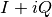

rss_ringoccs.rsr_reader.rsr_reader module¶
- Purpose:
- Class to create an instance linked to an RSR file
-
class
rss_ringoccs.rsr_reader.rsr_reader.RSRReader(rsr_file, decimate_16khz_to_1khz=True, cpu_count=8, verbose=False)¶ Bases:
objectPurpose: Reads the header of a raw RSR file when you first create an instance. Then reads the full RSR file to read in the raw measured complex signal 
- Arguments:
rsr_file (str): Full path name of a raw RSR file to read. RSR files can be downloaded using the shell script in the data” directory of the GitHub clone - Keyword Arguments:
decimate_16khz_to_1khz (bool): Optional Boolean argument which, if set to True, decimates 16kHz files down to 1kHz sampling rate. Note that this is a sticky keyword - if you set it to True, it will be True for any subsequent calls from the instance until you explicitly set it to False. This keyword is linked to the private attribute __decimate_16khz_to_1khz cpu_count (int): Number of cores to use when reading data in from file. Default is number of cores on your computer verbose (bool): Optional boolean variable which, when set to True, prints the header attributes that were set - Attributes:
rsr_file (str): Full path name of a raw RSR file to read spm_vals (np.ndarray): Seconds Past Midnight array of times over entire rsr file doy (int): Day of year of event year (int): Year of event dsn (str): Deep Space Network ID of the station that observed the spacecraft for this event band (bytes): Name of the wavelength of transmission (S, X, or Ka) sample_rate_khz (int): Sample rate, in kHz, of transmission (1 or 16) history (dict): Dictionary recording parameters of the run - Example:
>>> # Import rss_ringoccs >>> import rss_ringoccs as rss >>> # Define instance and set header attributes, and read in raw data >>> rsr_inst = rss.rsr_reader.RSRReader(rsr_file) >>> # Get predicted sky frequency at chosen SPM values f_spm >>> f_spm_returned, f_sky_pred = rsr_inst.get_f_sky_pred(f_spm=f_spm)
- Dependencies:
- RSRReader
- numpy
- os
- platform
- scipy.signal.decimate
- struct
- sys
- time
- Notes:
- Setting
decimate_16khz_to_1khz=Truefor a 1kHz file will be ignored - 16kHz files will take a few minutes to read and decimate
- Setting
-
get_f_sky_pred(f_spm=None, verbose=False)¶ - Purpose:
- Calculate predicted sky frequency at user-defined times using polynomial coefficients in each SFDU.
- Arguments:
f_spm (np.ndarray): Array of SPM values to evaluate predicted sky frequency at. Default is at 1 second spacing over entire data set. verbose (bool): Print the first few predicted sky frequency values if set to True - Returns:
f_spm (np.ndarray): Array of SPM values that predicted sky frequency was evaluated at. f_sky_pred (np.ndarray): Predicted sky frequency, calculated from the polynomial coefficients in the RSR file - Dependencies:
- numpy
- struct
- sys
- Notes:
- Will take a few minutes to run for 16kHz files